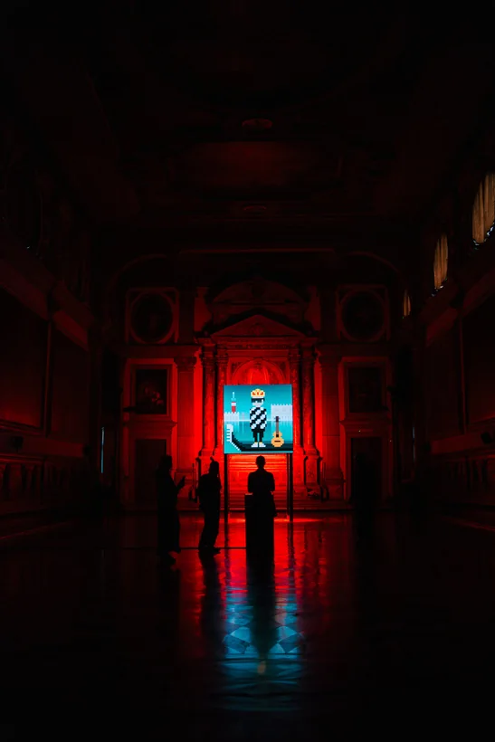
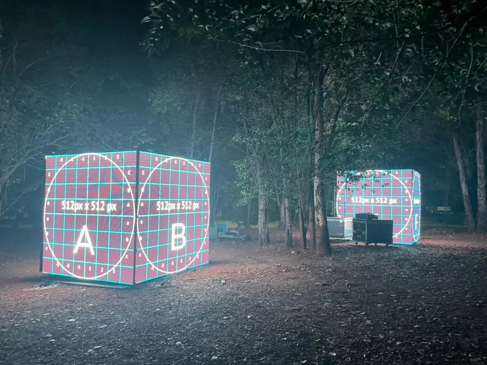
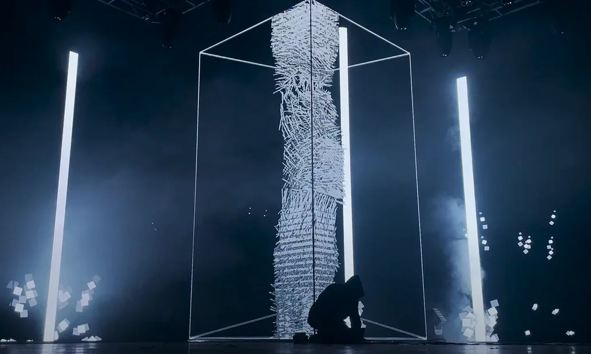

01 / Live A/V
45–60 minutes
Real-time audio & visuals
Synchronized lighting
Colapso
An audiovisual performance exploring the concept of collapse through a digital environment interacting with sound.
Set of music and image generated in real time. Both systems communicate and respond to each other. Sound transforms the visual landscape generated. As time passes, the visual system starts to collapse and take over control, destroying any balance on the harmonic structures established. The main theme explored is the balance between the progress of human creation, and destructive patterns as unavoidable forces of entropy. The impossibility of abstraction to overcome nature as time passes.
This is a real-time audiovisual performance where music dynamically drives both the visuals and interactive lighting. The system seamlessly adapts to any screen format or projection, requiring only sound system and screen/projection. If a lighting system is available, it can also be integrated for full control.
02 / Formats
Performance
Talk & workshop
Installations
Performance, research and spatial work.
Live A/V
45–60 minute real-time audiovisual performance for festivals, art centers, theaters, museums and contemporary sound spaces.
Sync A/V
90-minute lecture or hands-on workshop on multisensory perception—why sound and image fuse, and how to use it in live performance.
Installations
Motion-tracked environments, real-time fluid simulations, fulldome works and technical stage direction for exhibitions and institutions.
- Live A/V Set
- Colapso or site-adapted real-time audiovisual set (single-screen, wide LED, architectural projection or fulldome).
- Talk & Workshop
- Sync A/V — How we perceive sound and image as one ↗ (90-min talk or 3–6 hour studio workshop).
03 / Technical
Rider & stage
specifications
The space is part of the set.
Live A/V / Technical Rider
On stage (Artist system)
Self-contained real-time visual and audio workstation, MIDI/OSC controllers, balanced audio interface, and USB-to-DMX interface. Setup and line check: 30–45 minutes.
Video
Scalable to custom LED walls, large-scale projection, and non-standard aspect ratios. LED wall (minimum 1,200 nits) or high-contrast projection (1080p or 4K, direct HDMI or SDI line to stage position).
Darkness
Total or near-total darkness with minimal ambient light spill. The visual work relies on true blacks.
Audio
Stereo L/R balanced outputs (plus optional sub send) from the performance station via two active DI boxes. Full-range professional PA system and subwoofers capable of clean low-frequency reproduction, plus stage monitoring.
Lighting & Stage
Optional 5-pin DMX line (1 universe) at the performance table patched to house wash, strobes and haze. Performance table (approx. 1.5m × 0.8m) with stabilized AC power facing the screen.
Sync A/V / Talk & Workshop Requirements
- Room with controlled lighting, 1080p/4K projection or LED display, and stereo audio playback (HDMI/XLR) with clean low end.
- For the 90-minute talk: direct video/audio feed from lectern or desk; headset or handheld microphone for larger auditoriums.
- For the hands-on workshop: table for the live demonstration set, DMX lighting fixtures when available, and power strips for participants bringing laptops or controllers.
04 / Manuel Palenque
Buenos Aires
Visual artist &
creative technologist
Biography & press material.
Manuel Palenque is a visual artist and creative technologist based in Buenos Aires with over 15 years of experience in real-time audiovisual performance and interactive installations. His work connects electronic music, generative visual systems, and stage lighting—building live environments where sound and image are generated together and modify each other.
He has performed and taught across Tokyo, Hong Kong, Berlin, Venice, the United States, and Buenos Aires. Alongside his studio practice, he serves as Senior Creative Technologist at Superside, previously worked as Technical Video Director for Fuerza Bruta, runs the media lab Dataraiz in Buenos Aires, and founded Black Cycle, an art and technology festival at ArtHaus.
- Performed
- MUTEK Buenos Aires · Tecnópolis · Beyond Code #2, Tokyo · School of Creative Media, Hong Kong · ArtHaus
- Taught
- NODE Festival, Berlin · TECH LAB PAAK, Tokyo · UNTREF · Dataraiz
- Installations
- Bright Moments, Venezia · Verano Tecnópolis · Buenos Aires Planetarium · Adidas NMD
- Runs
- Dataraiz (media lab, Buenos Aires) · Black Cycle (art & technology festival)





